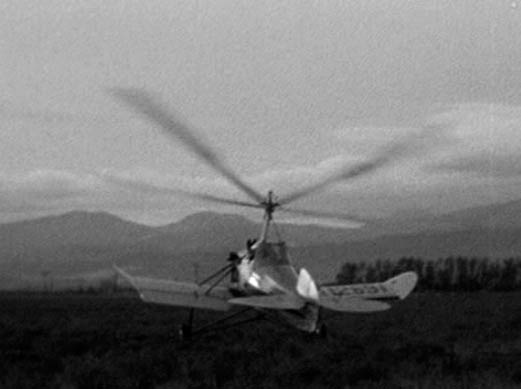

International House (1933)
In this film one of the characters flies around the world in his gyroplane named “The Spirit of Brooklyn”. A KELLETT K-3 AUTOGIRO NC12691 was used for filming. It was also used in the film “It Happened One Night”.